【教程】电视优化分享
写在前面：
这几天闲的没事干，准备看看电视§(￣▽￣)§，发现已经被广告占领╰（‵□′）╯，开机广告 首页弹窗广告 屏保广告 看视频前的的广告…。离谱的是看一个本地视频也有弹窗广告？？？，正好趁这时间吧电视优化一下。电视配置下如图，已经是非常的伊拉克了(ノへ￣、)，0.5+8G 双核1.6GHz的CPU 安卓4.4 720P屏幕 可以说营运商送的电视盒子都比这个配置高(＠_＠😉。
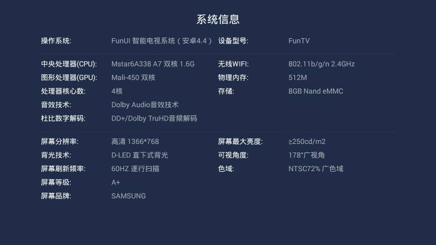
优化思路：
优化方向大致梳理一下：
-
冻结/卸载无用APP，保持电视有足够的运行和存储空间。
-
换一个清爽一点的桌面，原来的桌面是瀑布流形式，基本上全是VIP推广，广告等。
-
替换/修改广告文件，可以去除开机广告等（root）。
开始优化：
冻结/卸载应用软件
最先想到的就是wifiadb，不用修改系统就能冻结应用。在设置看了一圈没有找到版本号什么隐藏接口，于是安装 【创建快捷方式】 找到设置的活动点击，成功进入"设置"。
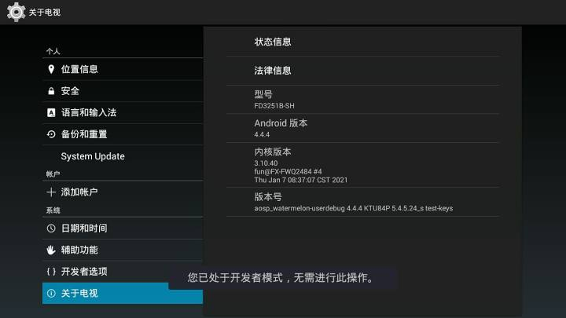
快速点击版本号即可开启开发者设置。
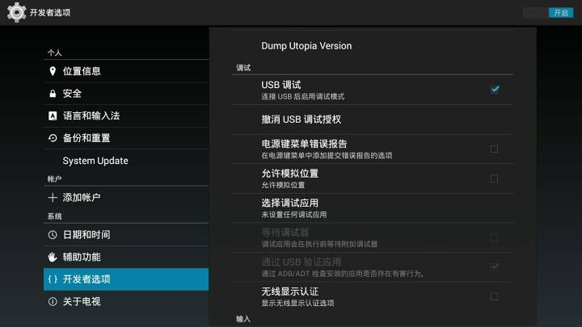
很遗憾，没有wifi adb，也对 这才安卓4.4。
既然不能adb就只能root了下载360root 安装 成功root!可用自带的冷藏室来冻结无用app。
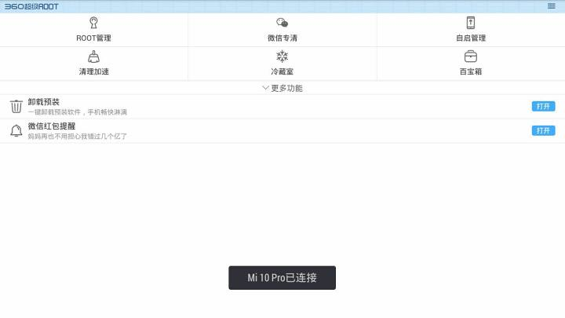
像一些自带的无用app、 bug 日志收集app、 广告app、 系统升级，这些东西全部冻结当然要根据实际情况自己决定。（冻结前请百度自己的电视型号，看看有没有优化教程，以免冻结系统进程卡开机）
这里推荐个冻结软件FreezeYOU-冻住你密码：cn08，支持安卓4~9.0，可用遥控器操作，要root!
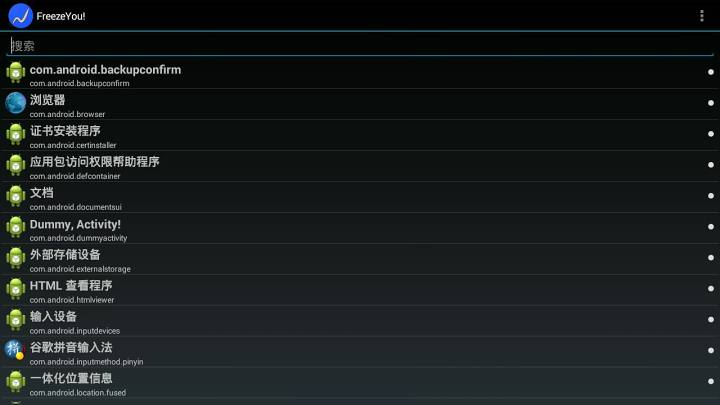
也可以用re管理器在：根目录/system/app路径直接删除app，最好先复制再删除以免出现不必要的麻烦。
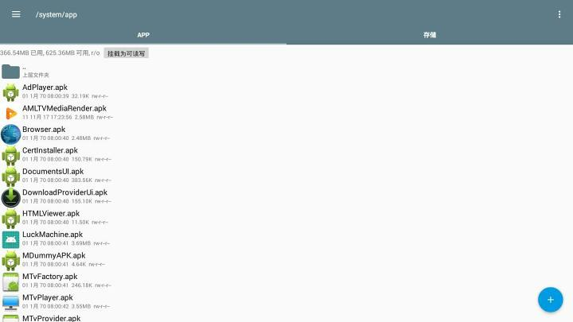
换一个清爽一点的桌面
一定要先安装新桌面再冻结原来的桌面，否则就会变大黑板，如果你的电视配置好我推荐当贝桌面4.0去广版。颜值高，还有高斯模糊。不好的话每次进出软件的时候桌面就会重新加载。
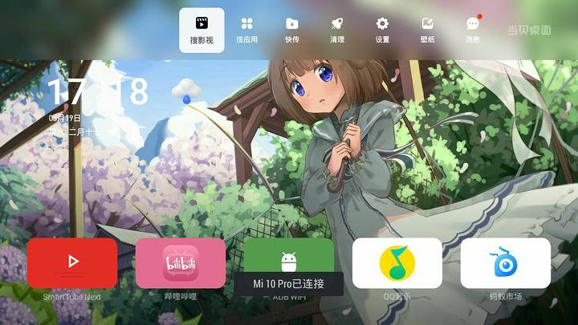
由于这辣鸡电视设置没有单独的APP入口，是从主屏幕应用调相关的API接口来设置。导致其他启动器无法打开设置。所以要设置好相关内容后冻结桌面。
替换/修改广告文件
可以先百度"电视名字+去广告"看看例案，系统不一样方法就这里也不好讲。
想花里胡哨的还可以改开机动画，把开机广告替换成自己喜欢的图片视频，开机动画和手机一样都是在/system/media/bootanimation.zip里，由于系统不能自定义壁纸，随便就加了一些壁纸，没想到没鸟用，桌面还是原来样子。
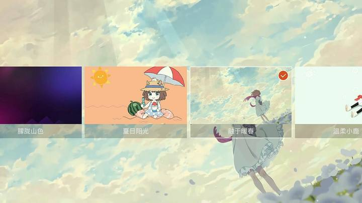
改完一定要把360毒瘤删了用的时候再下回来。那家伙太占内存和CPU了，而且还把自己弄成系统应用。
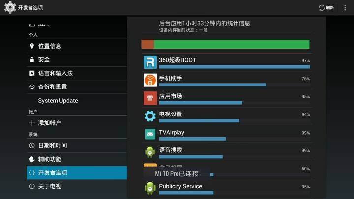
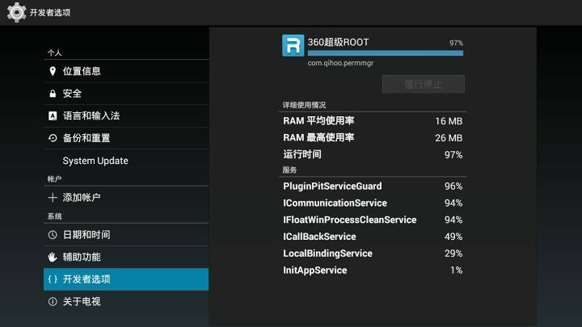
最后：
最后还发现了一个好玩的——自带的投屏 密码：asdf，没想到它是一个APP。提取出来安装在手机上也能完美运行，可以屏幕镜像，视频投屏，只有10m。
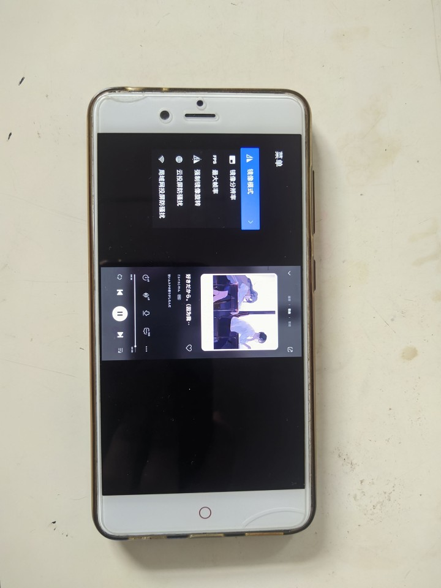
 微信
微信 支付宝
支付宝